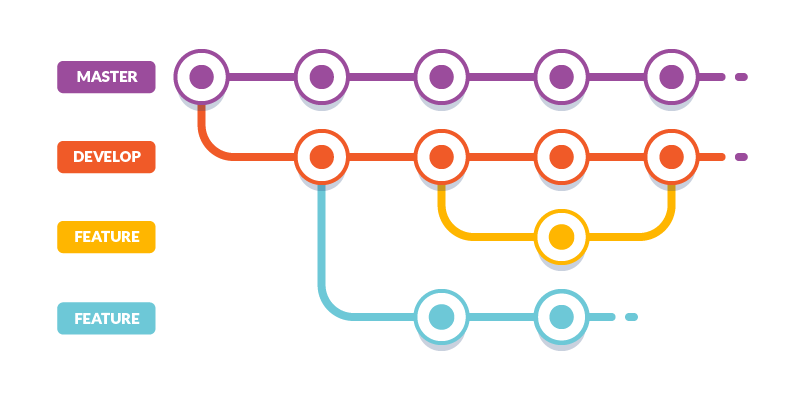

¿Qué es un control de versiones?
Un sistema de control de versiones se encarga del registro de los cambios realizados a lo largo del tiempo en uno o un conjunto de archivos (versiones), de forma tal que estos puedan ser recuperados con precisión de acuerdo a las necesidades de los usuarios. A este tipo de procesos se le puede denominar versionamiento y si bien este tipo de actividades son comunes en archivos o código fuente en la industria del desarrollo de software, este es un proceso aplicable a cualquier tipo de archivo.
¿Qué es GIT?
Git es un software de control de versiones diseñado por Linus Torvalds, pensando en la eficiencia, la confiabilidad y compatibilidad del mantenimiento de versiones de aplicaciones cuando estas tienen un gran número de archivos de código fuente.

¿Qué es un repositorio?

Un repositorio es una carpeta en la que se almacenan las diferentes versiones de los ficheros de un proyecto y el histórico de los cambios que se han realizado en ellos.
- Repositorio local:Es un contenedor de archivos que se encuentra en tu ordenador. Éste puede tener un proyecto lleno de diferentes archivos y es allí donde vas haciendo tus modificaciones y guardardolas para así, ir creando varias versiones.
- Repositorio Remoto:Son versiones de tu proyecto que están hospedadas en Internet o en cualquier otra red. Puedes tener varios de ellos, y en cada uno tendrás generalmente permisos de solo lectura o de lectura y escritura.
¿Qué es GITHUB?

GitHub es una plataforma donde puedes almacenar, compartir y trabajar junto con otros usuarios para escribir código. Almacenar tu código en un "repositorio" en GitHub te permite: Presentar o compartir el trabajo. Seguir y administrar los cambios en el código a lo largo del tiempo.
¿Qué es una rama en GIT y para qué sirve?
Una rama es simplemente una versión de la colección de directorios y archivos del repositorio. Cada vez que se crea una nueva rama, se crea una copia de la colección de archivos actual.En un entorno de colaboración, donde diferentes personas están trabajando en un mismo código, se genera una evolución del código en paralelo. Mientras alguien está trabajando en añadir una nueva característica al proyecto, otra persona puede estar arreglando un bug y otra en añadir alguna documentación.
¿Cuáles son los estados en GIT?

- Modificado:Este estado indica que el archivo ha sido editado, pero aún no se ha preparado para ser incluido en la próxima confirmación. Los cambios son visibles en el árbol de trabajo.
- En etapas (Staged): Cuando un archivo está en este estado, significa que ha sido preparado para ser confirmado. Esto se logra utilizando el comando git add, que añade el archivo al área de preparación (staging area).
- Confirmado (Committed): En este estado, los cambios han sido guardados en el repositorio de Git. Esto se realiza mediante el comando git commit, que crea una nueva instantánea del proyecto con los cambios preparados y un mensaje descriptivo de los mismos.
¿Qué es la terminal, consola o línea de comandos y para qué sirve?
La terminal, consola o línea de comandos es una interfaz basada en texto que permite a los usuarios interactuar con el sistema operativo mediante la introducción de comandos. Esta herramienta facilita la navegación por directorios, la gestión de archivos, la ejecución de programas y la administración del sistema, así como la automatización de tareas repetitivas a través de scripts.